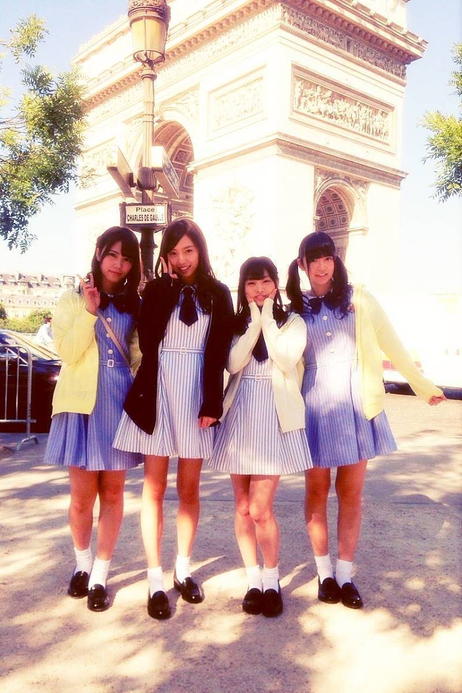
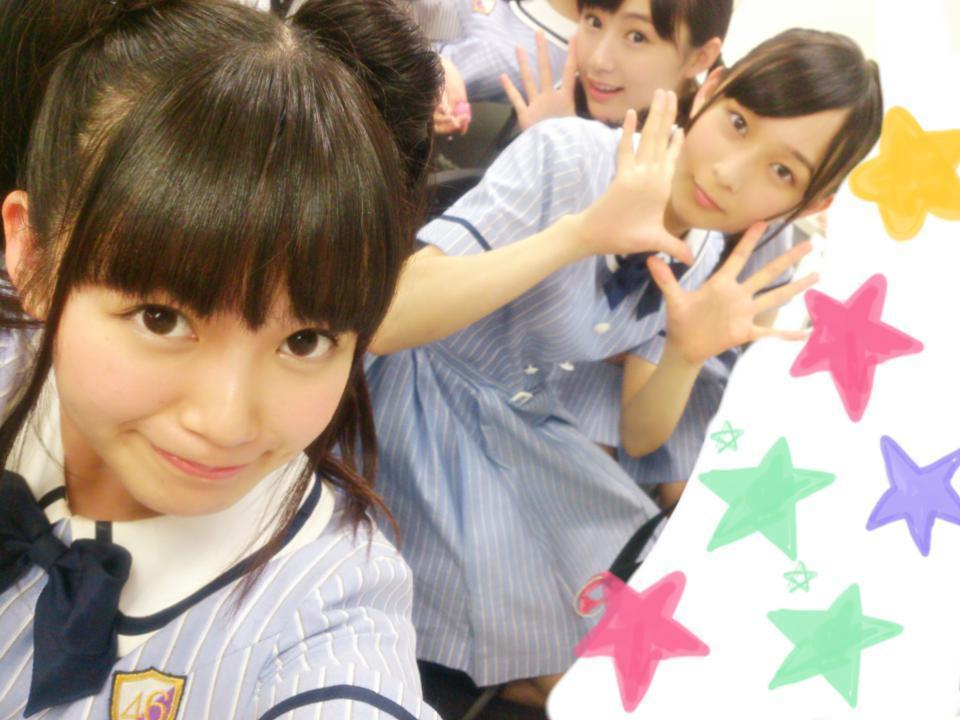
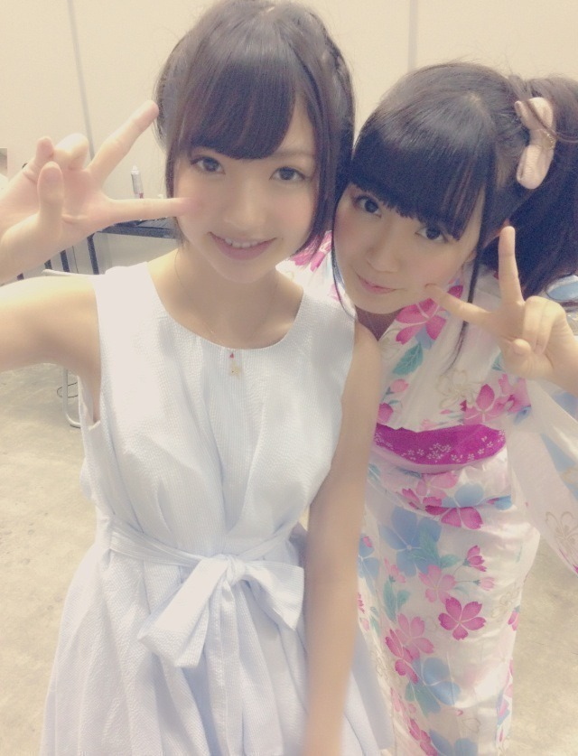
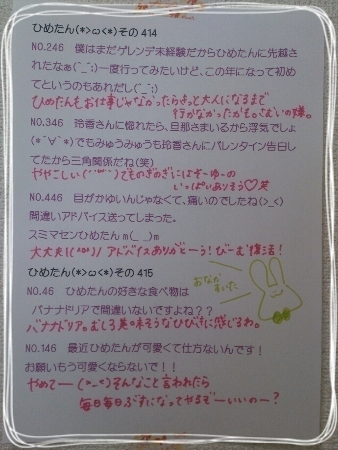
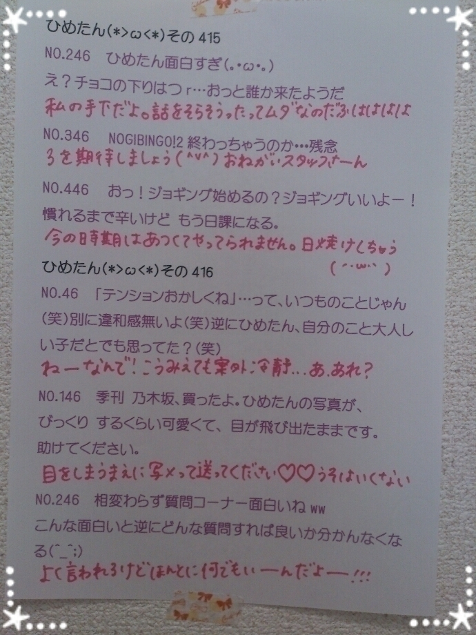

| 2014/07 29 Tue | ひめたん-OoO-その464 |
ぼんそわー( ´ ▽ ` )ﾉ

とゆことで
のぎ天#3配信されましたが
みなさんもう観てくれたかな？
この4人でパリに行ってきました！
先に情報がまわっちゃってたみたいで
握手会でも
「ひめたんパリ行ったんでしょ？」
みたいな感じでいろんな方に聞かれて
でも私の口から
情報解禁できるはずがなく
オンエア観てね、しか言えませんでした......
ああ苦しかった(´;o;`)
乃木のの若月・秋元回で
「ふたりはパリ行ったんだねーいいねー」
とか言いながら
街にダストボックスいっぱいあるのは
ひめたんも見てきたよー(笑)
のぎ天#2#3では
ボウリングをしたわけなんですが
ひめたん意外と上手だったみたい♡
最高スコアいくつ？って
いろんなひとに聞かれたけど
まずプライベートでボウリング行かないから
わかんないんだよねー
一緒に行くひとはーい( ´ ▽ ` )ﾉ
来週はパリ編！
アンダーメンバー全員集合してます
きいちゃん (北野日奈子ちゃん)が次回
初のぎ天＼(^o^)／

前回の日記にたくさん
アンダーライブのコメント
ありがとうございましたっ
行ったよってひとからは
楽しかった！感動した！って
嬉しいお言葉をたくさん(´,,•ω•,,｀)
お留守番ちーむのみなさんにも
レポ見てて楽しい気持ちになった！とか
ライブ成功して僕も私も嬉しいですって♪♪
そう、
前回の日記に書いてなかった
とっても大事な報告。
きゅんきゅん王国のみなさんっ
ぴんくのサイリウムも
ひめたんうちわも
ひめたんタオルもちゃんと見えたよ！
ひめたんTシャツも
ひめたんりぼんも
ひめたんとお揃いのついんてーるも！
ひめたんコールも
ひめたんびーむの「わー♡」も全部届いたよ！
ライブにたくさん元気もらいました
いつも本当にありがとう( ´ ･o･｀)らぶ
それからね、
ひめたん他の髪型もしてよーって方も
いらっしゃるので
公演中どうしよっかなって悩んだんだけど
やっぱりたくさんいるメンバーの中から
ちょっとでもはやくひめたんを見つけてほしくて
10公演一貫してついんてーるにしたの⌒ﾟ( ･ᴗ･ )ﾟ⌒
他の髪型みたいーって方は
個握とかでやろうと思うので
なんかあったらリクエストまってるよー♪
そして、他のメンバー推しだけど
ライブ見てたらひめたん気になってきたあああぁあ
ってゆそこのあなた！
きゅんきゅん王国はいつでも大歓迎だよ( ^O^ )♡
にゃん

いつかのライブ中に
ひめたんは永遠の17さいって
宣言してしまいました＼(^o^)／てへ
前回の乃木ののは
ねねころ (伊藤寧々ちゃん)
まりか (伊藤万理華ちゃん)でした☆
いやー伊藤ちゃんず揃いましたねー
中元さんと伊藤さんのなかいさん回でした！
ひめたん高圧的だったねー
今週はひめたんパキパキしてた気がする(笑)
きゅんきゅん王国には
ラブリーひめたん支持派と
ブラックひめたん支持派がいるらしい......うー
次回もお楽しみにっ

愛されまあや♡
まあや (和田まあやちゃん)とふたりで
FRIDAYさんに取材していただきました
そうです広島コンビ！
8/15発売です( ´ ▽ ` )ﾉ
近くなったらまたお知らせさせてくださいっ

 ひめたんはスクフェスランクいくつ？
ひめたんはスクフェスランクいくつ？
47？とかそれくらい
まだまだな新参者(´・ω・｀)
みんな教えてくれてありがとねー♪
ひめたんの前には、川に溺れたまなったんと、
水たまりに落ちそうなピンクのリボンがあります。
どっちを最初に助ける？？
(そ、そ、そんなの言うまでも......)
 すきなお洋服のブランドは？
すきなお洋服のブランドは？
LIZ LISAとか
LODISPOTTOとかかな
でもあんまりお店にこだわらないで
いろんなとこでショッピングするよー♪
ひめたんびーむの印税は
どれくらい貰っているんですか？
みんな許可なしにびーむやるからなー
ほんとはみんなもびーむ好きなんだな
愛されてんな、ひめたんびーむ(<・ω・>)

ひめたんの日記の
コメント欄下２ケタに46を踏んだ方へ
手書きでコメ返するコーナー
なんですが、みなさんお気づきかと思いますが
これだいぶタイムラグ生まれちゃって
今日貼るやつも2月とかのなんだよねー
ほんとごめんね(´・ω・｀)
できるだけタイムリーにしたいから
今日から3枚貼るよ！
＼ ひめたん46 ／



いつもたくさんコメントありがとう！
ライブの感想のほかにも
乃木のの・MV・のぎ天やラブライブトーク
読んでて楽しい＼(^o^)／
SamuraiELOさんは
チェックしてくれたかな？
男性の夏コーデについてお話したよー☆
AKB新聞さんにもチラッと載ってるので
ぜひお手に取ってみてねー
次回の乃木どこは10th選抜発表！
珍しくひめたんが
ついんてーるしてないお⌒ﾟ( ･ᴗ･ )ﾟ⌒
(＊´・ω・＊)
コメント(567)
2014/07/29 00:00